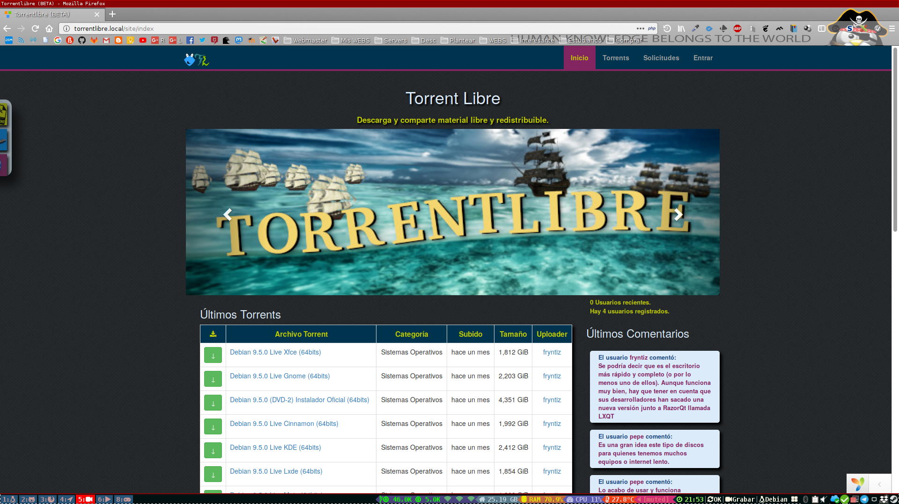
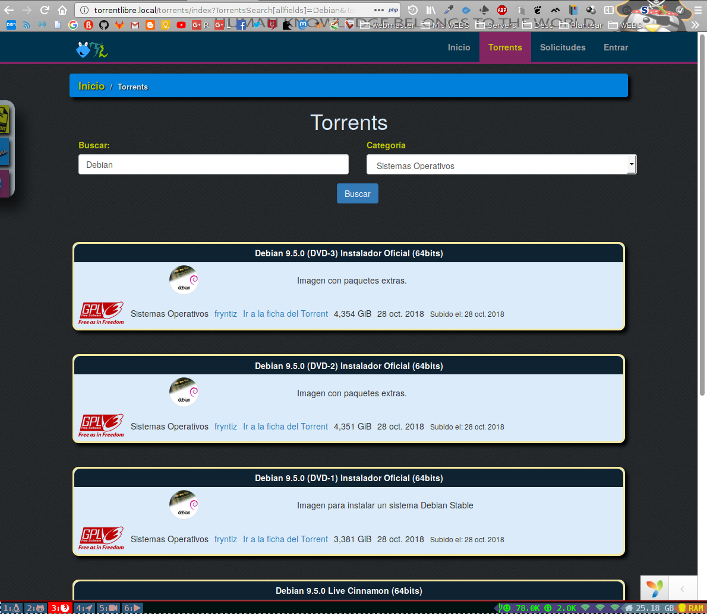
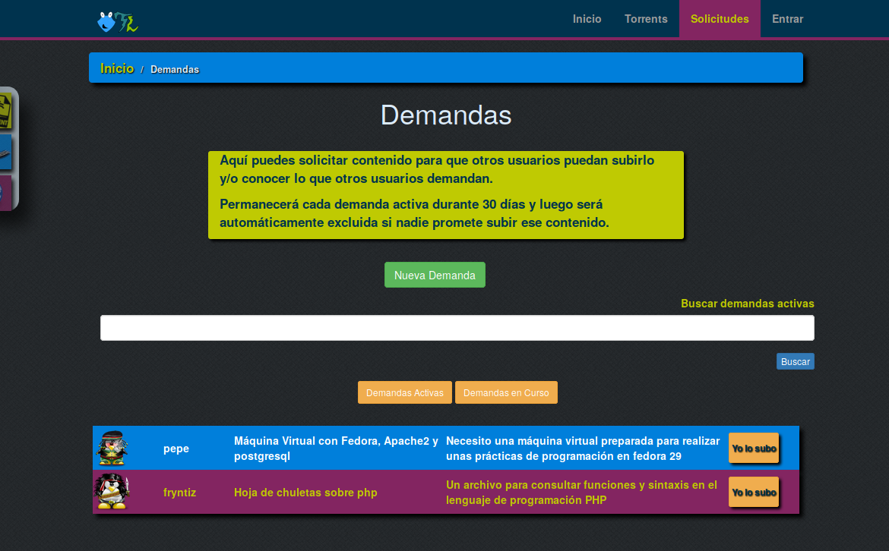
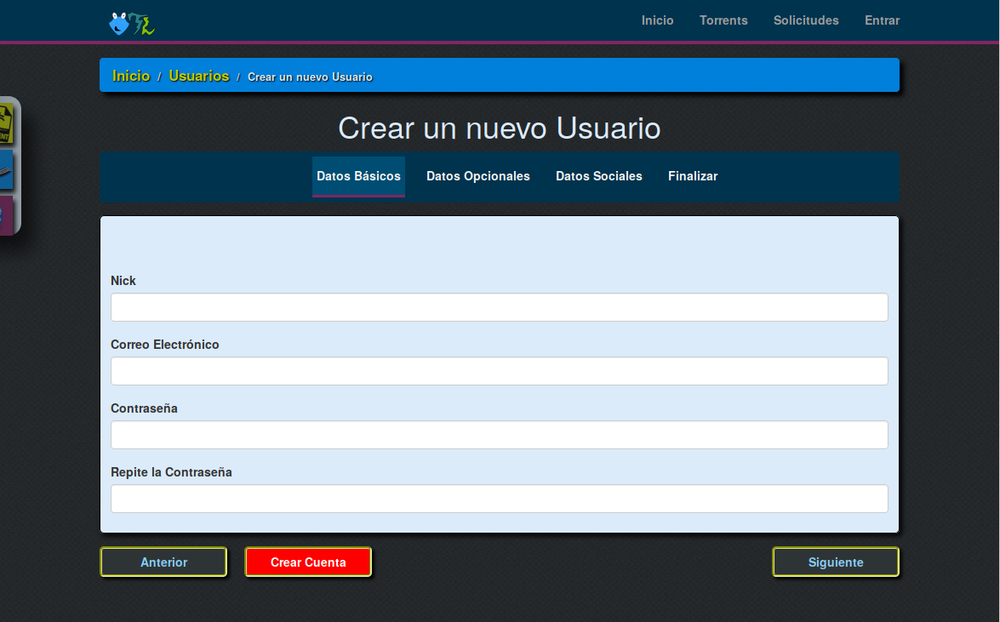
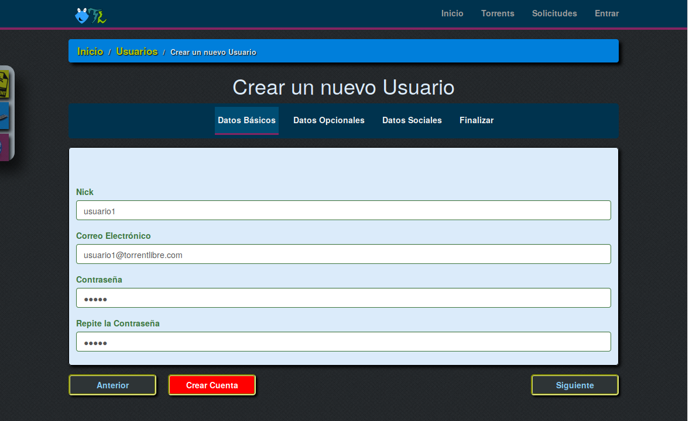
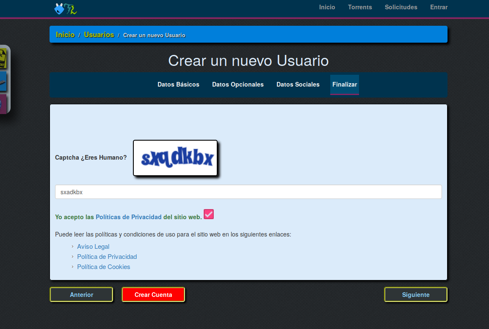
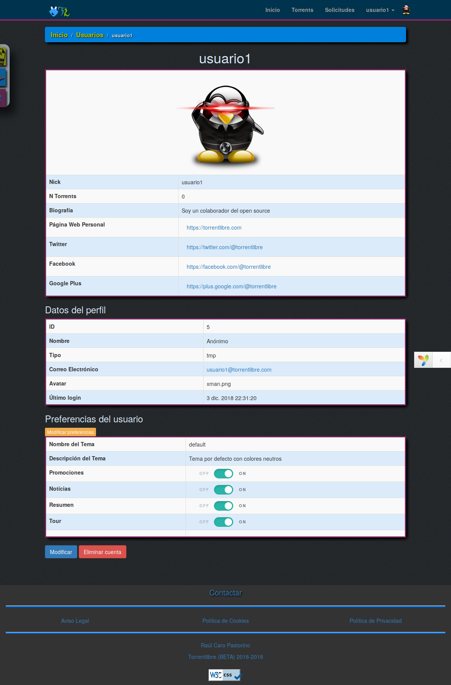
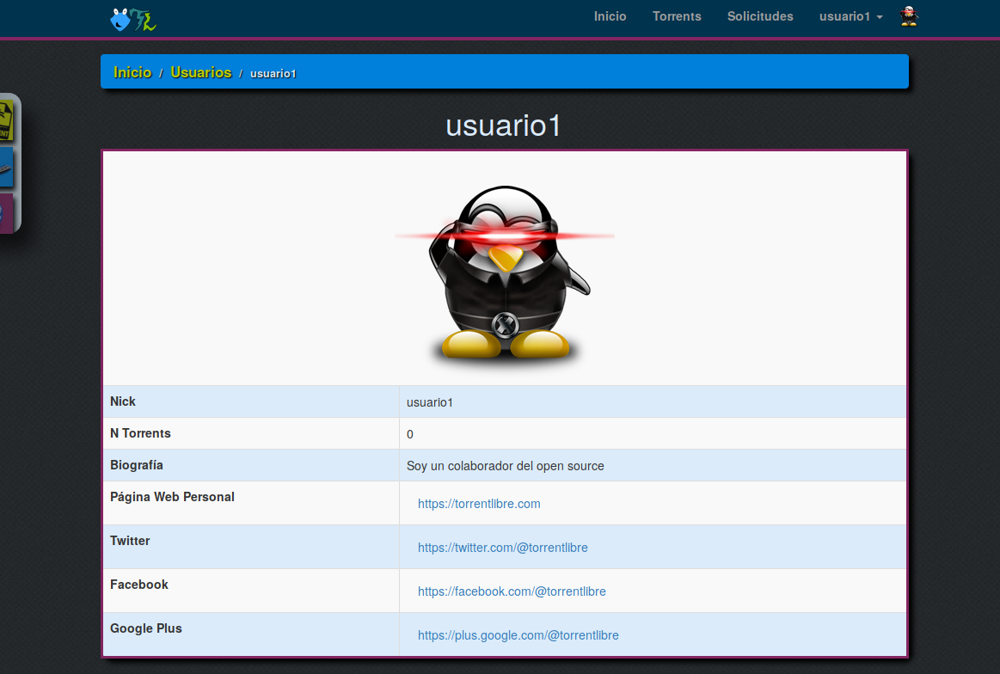
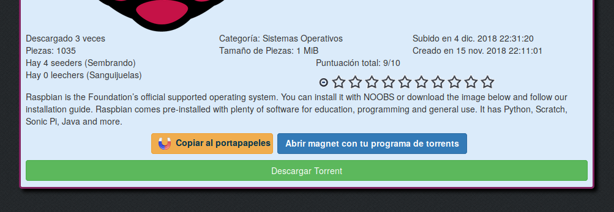
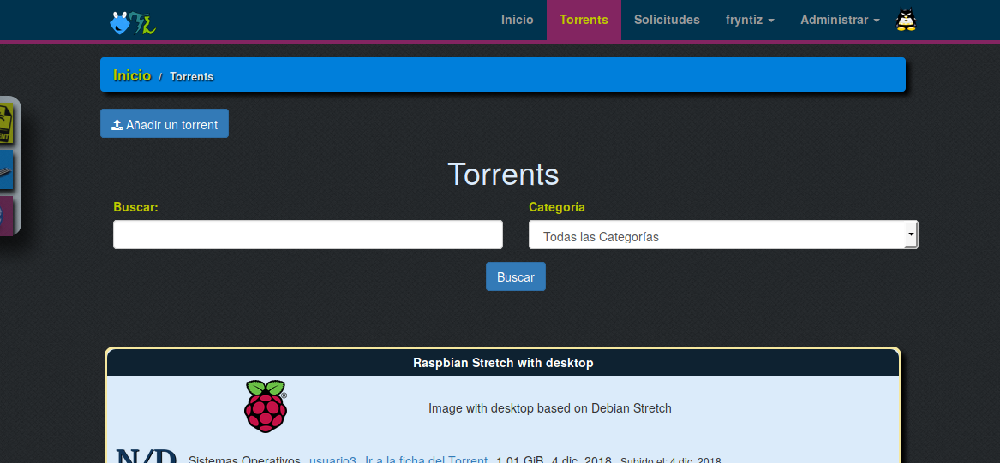

Manual de usuario ¶
Esta aplicación está disponible sin necesitar tener cuenta para navegar y/o descargar el material compartido.
Portada ¶
Al acceder a la página principal encontramos un resumen de las últimas subidas, últimos comentarios, torrents mejor puntuados, y comentarios mejor puntuados.


Torrents ¶
En la sección torrents encontramos todos los torrents ordenados por últimas subidas.
Se dispone de un buscador en el que podemos filtrar por nombre, descripción y categoría.

Solicitar incluir material ¶
Es posible solicitar que se añada nuevo material.
Para ver lo que otros usuarios han solicitado entramos en la sección solicitudes

Podemos ver lo que otros usuarios han solicitado/demandado pero es necesario entrar en la aplicación para responder a esa solicitud.
En el botón "Yo lo subo" indicamos que nos hacemos cargo de una solicitud.
En la siguiente sección vemos como crear cuenta en la aplicación.
Crear cuenta de usuario ¶
Cuando pulsemos sobre alguna acción que requiera tener cuenta o pulsemos sobre el botón Entrar nos redirigirá a la ventana de login y/o crear cuenta.
Si es la primera vez que accedemos necesitamos crear la cuenta pulsando sobre Crear Cuenta

La creación de cuentas requiere pocos campos obligatorios y ninguno personal ya que en esta aplicación el material es el protagonista y no se requieren datos personales de usuario más que unas credenciales básicas.

Los campos requeridos son:
- nick
- contraseña
- captcha
Podemos rellenar los datos opcionales y sociales en caso solo de interesarnos.

En el apartado de datos sociales opcionalmente podemos elegir un avatar que nos represente o simplemente parezca curioso (de no hacerlo se tomará el que existe por defecto)

Si queremos compartir nuestras redes sociales disponemos de un apartado dónde puedes introducir:
- tu web
- google plus

Finalmente nos quedará introducir el captcha demostrando que no somos un bot y aceptar las políticas del sitio tras haberlas leído detenidamente.

Una vez hemos pulsado Crear Cuenta seremos redirigidos a nuestro espacio de usuario recién creado.
Nuestro usuario ¶
El usuario es una representación de nosotros identificándonos mínimamente.
Desde nuestro perfil podemos observar la cantidad de descargas que hemos realizado, nuestro avatar, biografía, redes etc etc

Para el público solo será visible la siguiente parte:

De forma que el email y preferencias quedarán ocultos al resto de usuarios.
Ahora en el apartado de Solicitudes podemos atender demandas de otros usuarios y ver todas las que han sido atendidas pulsando Demandas en Curso

Descargar Torrents ¶
Para descargar un torrent tenemos 3 opciones:
- Copiar al portapapeles → Copia el enlace para poder pegarlo en cualquier parte como texto.
- Abrir magnet con tu programa de torrent → El navegador abrirá el torrent con el cliente que tengas predefinido o te preguntará que aplicación utilizar.
- Descargar torrent → Descarga el archivo .torrent.

Reportar torrent ¶
Si encontramos un torrent con el contenido duplicado, ofensivo, ilegal o fuera de contexto incumpliendo las normas de la plataforma podemos reportarlos a través del botón "Reportar Torrent"

Puntuar Torrent ¶
Los torrents se pueden valorar mediante el selector con un conjunto de estrellas siendo del 1-10 la puntuación posible (cada estrella vale 1 punto)

Subir torrent ¶
En la sección de torrents tenemos la opción de subir el nuestro y colaborar con la comunidad open source.
Para comenzar pulsamos sobre el botón de Añadir un torrent

En la pantalla que se nos abrirá introducimos los datos correspondientes al torrent que estamos subiendo y pulsamos sobre Guardar

Limitaciones al subir torrents basado en rangos ¶
La subida de torrents está limitada para prevenir el spam y uso no autorizado. Tras crear una cuenta no es posible subir un torrent hasta haber sido validado por un administrador o editor.
Una vez aprobado para subir torrents se dispondrá de una cantidad limitada de subidas que aumentará con el tiempo según la cantidad de torrents que tengamos subidos siendo la siguiente relación:
| Rango | Publicaciones diarias |
|---|---|
| novato | 1 |
| geekv1 | 2 |
| geekv2 | 3 |
| geekv3 | 20 |